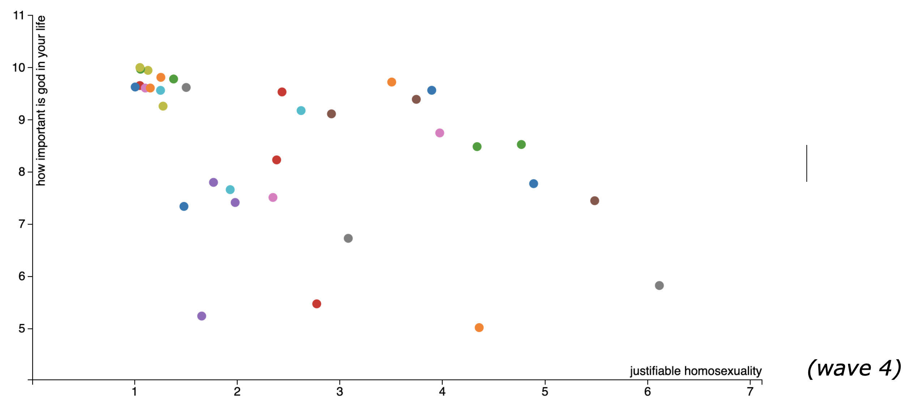
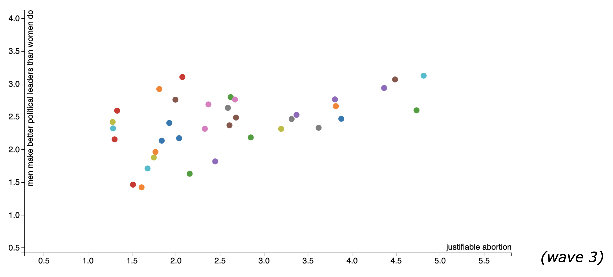
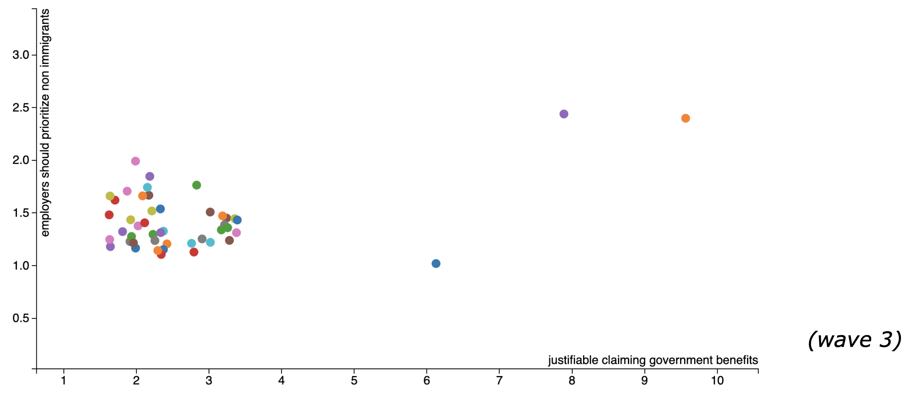

The columns include some questions that could potentially prove or destroy some prejudices that we face everyday, and that is what I will focus on. I really enjoy the idea of looking at the correlation between 2 variables at a time, so my thought was to build a dynamic axis scatterplot linked with a time slider that changed over waves. Unfortunately, I did not have time to develop this, so the link I provide is basically a scatter plot. With some minor changes in the code, I was able to produce some plots.
We found this link that already had some of the data formatted. After deleting the fields that had many null values, I found very interesting to compare most of the “justifiable” survey questions with some others about religion, gender inequality and more. Here are some examples that I found interesting:   